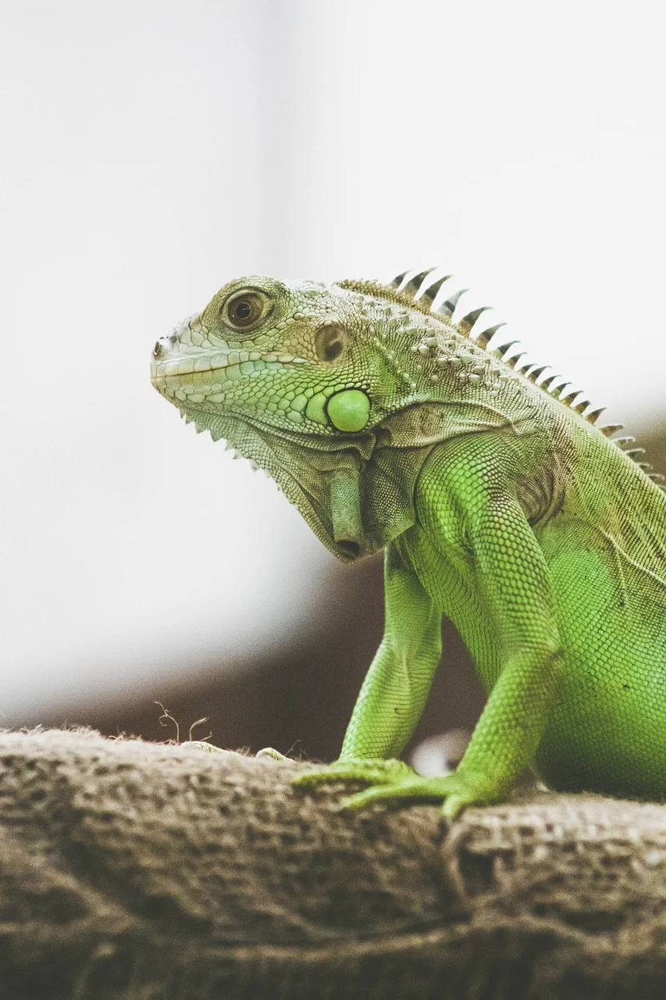

Go to my Github Profile

Go to my Instagram Profile
About me
I'm 26 years old and come from Bad Herrenalb, Baden-Württemberg My personality is characterized by the fact that I am very inquisitive and always want to learn something new. In my free time I play bowling but also spend time on the PC. Right now I'm training to make a career change as a web developer. Feel free to visit my Github page if you want to know more and see some of my projects. Otherwise I'm a friendly, open-minded person and I'm always happy to meet new people.
My Curriculum Vitae
| Year | Station |
|---|---|
| 2002 - 2006 | Elementary School |
| 2006 - 2012 | Junior High School |
| 2012 - 2016 | Much tried and tried around what suits me (Internships, Minijobs, etc.) |
| 2016 - 2019 | Apprenticeship as businesswoman for office management |
| 2020 - now | Job and part-time continuing education web development, now bootcamp at "neue Fische" in full time |